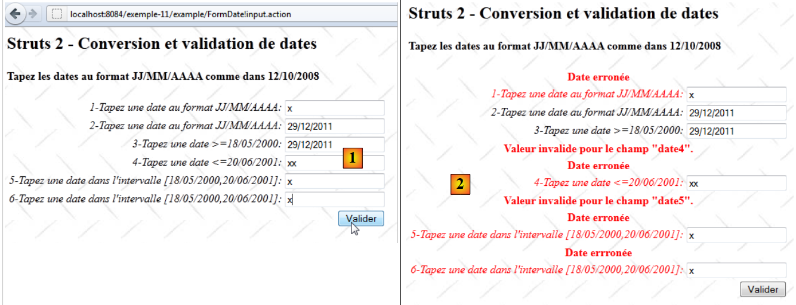
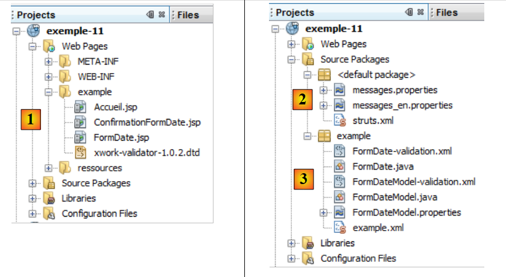
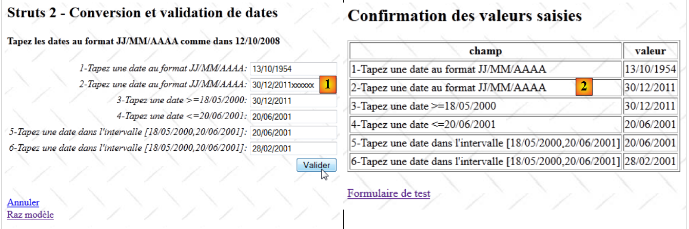

14. المثال 11 – تحويل التواريخ والتحقق من صحتها
يقدم التطبيق الجديد ميزة إدخال التواريخ:
 |
- في [1]، نموذج الإدخال
- إلى [2]، الرد المُرسَل
يعمل التطبيق بطريقة مشابهة لتلك المستخدمة في إدخال الأعداد الصحيحة، لذا سنكتفي بتوضيح النقاط التي تختلف فقط.
14.1. مشروع NetBeans
مشروع NetBeans هو كما يلي:
 |
- في [1]، طرق عرض التطبيق
- [Accueil.jsp]: الصفحة الرئيسية
- [FormDate.jsp]: نموذج الإدخال
- [ConfirmationFormDate.jsp]: صفحة التأكيد
- في [2]، وملف الرسائل [messages.properties] وملف التكوين الرئيسي لـ Struts
- في [3]:
- [FormDate.java]: الإجراء الذي يعرض النموذج ويعالجه
- [FormDate-validation.xml]: قواعد التحقق من صحة الإجراء [FormDate]. يقوم هذا الملف بتفويض عمليات التحقق هذه إلى النموذج.
- [FormDateModel]: نموذج الإجراء [FormDate]
- [ FormDateModel-validation.xml]: قواعد التحقق من صحة النموذج
- [FormDateModel.properties]: ملف رسائل النموذج
- [example.xml]: ملف التكوين الثانوي لـ Struts
14.2. تكوين المشروع
يتم تكوين المشروع بشكل أساسي من خلال الملف التالي [example.xml]:
<?xml version="1.0" encoding="UTF-8" ?>
<!DOCTYPE struts PUBLIC
"-//Apache Software Foundation//DTD Struts Configuration 2.0//EN"
"http://struts.apache.org/dtds/struts-2.0.dtd">
<struts>
<package name="example" namespace="/example" extends="struts-default">
<action name="Accueil">
<result name="success">/example/Accueil.jsp</result>
</action>
<action name="FormDate" class="example.FormDate">
<result name="input">/example/FormDate.jsp</result>
<result name="cancel" type="redirect">/example/Accueil.jsp</result>
<result name="success">/example/ConfirmationFormDate.jsp</result>
</action>
</package>
</struts>
وهو مشابه للملف الذي تمت دراسته لإدخال الأعداد الصحيحة.
14.3. ملفات الرسائل
الملف [messages.properties] هو التالي:
Accueil.titre=Accueil
Accueil.message=Struts 2 - Conversions et validations
Accueil.FormDate=Saisie de dates
Form.titre=Conversions et validations
FormDate.message=Struts 2 - Conversion et validation de dates
FormDate.conseil=Tapez les dates au format JJ/MM/AAAA comme dans 12/10/2008
Form.submitText=Valider
Form.cancelText=Annuler
Form.clearModel=Raz mod\u00e8le
Confirmation.titre=Confirmation
Confirmation.message=Confirmation des valeurs saisies
Confirmation.champ=champ
Confirmation.valeur=valeur
Confirmation.lien=Formulaire de test
xwork.default.invalid.fieldvalue=Valeur invalide pour le champ "{0}".
الملف [FormDateModel.properties] هو التالي:
date.format={0,date,dd/MM/yyyy}
date1.prompt=1-Tapez une date au format JJ/MM/AAAA
date1.error=Date erron\u00E9e
date2.prompt=2-Tapez une date au format JJ/MM/AAAA
date2.error=Date erron\u00E9e
date3.prompt=3-Tapez une date >=18/05/2000
date3.error=Date erron\u00E9e
date4.prompt=4-Tapez une date <=20/06/2001
date4.error=Date erron\u00E9e
date5.prompt=5-Tapez une date dans l''intervalle [18/05/2000,20/06/2001]
date5.error=Date errron\u00E9e
date6.prompt=6-Tapez une date dans l''intervalle [18/05/2000,20/06/2001]
date6.error=Date errron\u00E9e
السطر 1 يلعب دورًا مهمًا. سنعود إلى هذا لاحقًا.
14.4. نموذج الإدخال
تبدو طريقة العرض [FormDate.jsp] كما يلي:
<%@ page contentType="text/html; charset=UTF-8" pageEncoding="UTF-8"%>
<%@ taglib prefix="s" uri="/struts-tags" %>
<html>
<head>
<title><s:text name="Form.titre"/></title>
<s:head/>
</head>
<body background="<s:url value="/ressources/standard.jpg"/>">
<h2><s:text name="FormDate.message"/></h2>
<h4><s:text name="FormDate.conseil"/></h4>
<s:form name="formulaire" action="FormDate">
<s:textfield name="date1" key="date1.prompt"/>
<s:textfield name="date2" key="date2.prompt" value="%{#parameters['date2']!=null ? #parameters['date2'] : date2==null ? '' :getText('date.format',{date2})}"/>
<s:textfield name="date3" key="date3.prompt" value="%{#parameters['date3']!=null ? #parameters['date3'] : date3==null ? '' :getText('date.format',{date3})}"/>
<s:textfield name="date4" key="date4.prompt" value="%{#parameters['date4']!=null ? #parameters['date4'] : date4==null ? '' :getText('date.format',{date4})}"/>
<s:textfield name="date5" key="date5.prompt" value="%{#parameters['date5']!=null ? #parameters['date5'] : date5==null ? '' :getText('date.format',{date5})}"/>
<s:textfield name="date6" key="date6.prompt"/>
<s:submit key="Form.submitText" method="execute"/>
</s:form>
<br/>
<s:url id="url" action="FormDate" method="cancel"/>
<s:a href="%{url}"><s:text name="Form.cancelText"/></s:a>
<br/>
<s:url id="url" action="FormDate" method="clearModel"/>
<s:a href="%{url}"><s:text name="Form.clearModel"/></s:a>
</body>
</html>
السطور من 13 إلى 18 هي الحقول الستة المخصصة لإدخال التواريخ. الحقول من date2 إلى date5 لها سمة معقدة value، وهي نفس السمة المستخدمة لإدخال الأرقام العشرية. ونظرًا لظهور نفس الصعوبات، فقد تم حلها بالطريقة نفسها.
14.5. شاشة التأكيد
تبدو شاشة التأكيد [ConfirmationFormDate.jsp] كما يلي:

ورمزها هو كما يلي:
<%@ page contentType="text/html; charset=UTF-8" pageEncoding="UTF-8"%>
<%@ taglib prefix="s" uri="/struts-tags" %>
<html>
<head>
<title><s:text name="Confirmation.titre"/></title>
<s:head/>
</head>
<body background="<s:url value="/ressources/standard.jpg"/>">
<h2><s:text name="Confirmation.message"/></h2>
<table border="1">
<tr>
<th><s:text name="Confirmation.champ"/></th>
<th><s:text name="Confirmation.valeur"/></th>
</tr>
<tr>
<td><s:text name="date1.prompt"/></td>
<td><s:text name="date1"/></td>
</tr>
<tr>
<td><s:text name="date2.prompt"/></td>
<td>
<s:text name="date.format">
<s:param value="date2"/>
</s:text>
</td>
</tr>
<tr>
<td><s:text name="date3.prompt"/></td>
<td>
<s:text name="date.format">
<s:param value="date3"/>
</s:text>
</td>
</tr>
<tr>
<td><s:text name="date4.prompt"/></td>
<td>
<s:text name="date.format">
<s:param value="date4"/>
</s:text>
</td>
</tr>
<tr>
<td><s:text name="date5.prompt"/></td>
<td>
<s:text name="date.format">
<s:param value="date5"/>
</s:text>
</td>
</tr>
<tr>
<td><s:text name="date6.prompt"/></td>
<td><s:text name="date6"/></td>
</tr>
</table>
<br/>
<s:url id="url" action="FormDate!input"/>
<s:a href="%{url}"><s:text name="Confirmation.lien"/></s:a>
</body>
</html>
تقتصر طريقة العرض [ConfirmationFormDate.jsp] على عرض النموذج [FormDateModel]. توضح الأسطر 47-49 عرض تاريخ. نريد أن يأخذ هذا العرض تنسيق التاريخ في الاعتبار. ولذلك، نستخدم العلامة <s:text> التي كنا نستخدمها حتى الآن لتدويل التطبيق.
هنا، مفتاح الرسالة المستخدم هو date.format. يوجد هذا المفتاح في الملف [FormDateModel.properties]:
date.format={0,date,dd/MM/yyyy}
القيمة المرتبطة بالمفتاح هنا ليست رسالة، بل تنسيق عرض:
- 0 هو معلمة تمثل القيمة المراد عرضها. وهنا سيكون الحقل date5 من النموذج.
- date يمثل تاريخًا. في السابق، كان لدينا number لرقم.
- dd/MM/yyyy يمثل تنسيق التاريخ. هنا، نريده بالصيغة jj/mm/aaaa. تنسيق Java المناسب هو dd/MM/yyyy (d: اليوم، M: الشهر، y: السنة)
العلامة
<s:text name="date.format">
<s:param value="date5"/>
</s:text>
يعرض الرسالة {0، date، dd/MM/yyyy} حيث سيحل المعلمة date5 (السطر 2) محل المعلمة 0 في التنسيق. وبالتالي، سيتم عرض النموذج date5 بالتنسيق jj/mm/aaaa.
14.6. القالب [FormDateModel]
يتم إدراج الحقول من date1 إلى date6 من النموذج [FormDate.jsp] في النموذج [FormDateModel] التالي:
package example;
import java.util.Date;
public class FormDateModel {
// مُنشئ بدون معلمات
public FormDateModel() {
}
// الحقول
private String date1;
private Date date2 = new Date();
private Date date3 = new Date();
private Date date4;
private Date date5;
private String date6;
// إعادة تعيين النموذج
public void clearModel() {
date1 = null;
date2 = null;
date3 = null;
date4 = null;
date5 = null;
date6 = null;
}
// أدوات الاسترجاع والتعيين
...
}
- الحقول date1 و date6 من النوع String
- الحقول الأخرى من النوع Date
14.7. التحقق من صحة النموذج
يتم التحكم في التحقق من صحة النموذج بواسطة ملفين: [FormDate-validation.xml] و [FormDateModel-validation.xml].
يقوم الملف [FormDate-validation.xml] بتفويض عمليات التحقق إلى الملف [FormDateModel-validation.xml]:
<!--
<!DOCTYPE validators PUBLIC "-//OpenSymphony Group//XWork Validator 1.0.2//
EN" "http://www.opensymphony.com/xwork/xwork-validator-1.0.2.dtd">
-->
<!DOCTYPE validators PUBLIC "-//OpenSymphony Group//XWork Validator 1.0.2//
EN" "http://localhost:8084/exemple-10/example/xwork-validator-1.0.2.dtd">
<validators>
<field name="model" >
<field-validator type="visitor">
<param name="appendPrefix">false</param>
<message/>
</field-validator>
</field>
</validators>
لقد سبق أن صادفنا هذا الملف.
يحتوي الملف [FormDateModel-validation.xml] على قواعد التحقق من الصحة التالية:
<!--
<!DOCTYPE validators PUBLIC "-//OpenSymphony Group//XWork Validator 1.0.2//
EN" "http://www.opensymphony.com/xwork/xwork-validator-1.0.2.dtd">
-->
<!DOCTYPE validators PUBLIC "-//OpenSymphony Group//XWork Validator 1.0.2//
EN" "http://localhost:8084/مثال-11/example/xwork-validator-1.0.2.dtd">
<validators>
<field name="date1" >
<field-validator type="requiredstring" short-circuit="true">
<message key="date1.error"/>
</field-validator>
<field-validator type="regex" short-circuit="true">
<param name="expression">^\d{2}/\d{2}/\d{4}$</param>
<param name="trim">true</param>
<message key="date1.error"/>
</field-validator>
</field>
<field name="date2" >
<field-validator type="required" short-circuit="true">
<message key="date2.error"/>
</field-validator>
<field-validator type="conversion" short-circuit="true">
<message key="date2.error"/>
</field-validator>
</field>
<field name="date3" >
<field-validator type="required" short-circuit="true">
<message key="date2.error"/>
</field-validator>
<field-validator type="conversion" short-circuit="true">
<message key="date3.error"/>
</field-validator>
<field-validator type="date" short-circuit="true">
<param name="min">18/05/2000</param>
<message key="date3.error"/>
</field-validator>
</field>
<field name="date4" >
<field-validator type="required" short-circuit="true">
<message key="date2.error"/>
</field-validator>
<field-validator type="conversion" short-circuit="true">
<message key="date4.error"/>
</field-validator>
<field-validator type="date" short-circuit="true">
<param name="max">20/06/2001</param>
<message key="date4.error"/>
</field-validator>
</field>
<field name="date5" >
<field-validator type="required" short-circuit="true">
<message key="date2.error"/>
</field-validator>
<field-validator type="conversion" short-circuit="true">
<message key="date5.error"/>
</field-validator>
<field-validator type="date" short-circuit="true">
<param name="min">18/05/2000</param>
<param name="max">20/06/2001</param>
<message key="date5.error"/>
</field-validator>
</field>
<field name="date6" >
<field-validator type="requiredstring" short-circuit="true">
<message key="date6.error"/>
</field-validator>
<field-validator type="regex" short-circuit="true">
<param name="expression">^\d{2}/\d{2}/\d{4}$</param>
<param name="trim">true</param>
<message key="date6.error"/>
</field-validator>
</field>
</validators>
- تتحقق قاعدة الأسطر 11-20 من أن حقل الإدخال date1 يتوافق مع نموذج تعبير منتظم يمثل تاريخًا بالصيغة يي/ش/سسسس. تجدر الإشارة إلى أنه يتم التحقق من أن السلسلة تتخذ شكل تاريخ، ولكن لا يتم التحقق من صحتها. وبالتالي، فإن 29/02/2011 تتخذ شكل تاريخ ولكنها ليست تاريخًا صحيحًا.
- تتحقق القاعدة الواردة في الأسطر 22-29 من أن حقل الإدخال date2 يمثل تاريخًا صالحًا.
- تتحقق القاعدة الواردة في الأسطر 31-42 من أن حقل الإدخال date3 يمثل تاريخًا صالحًا >=18/05/2000
- تتحقق القاعدة الخاصة بالأسطر 44-55 من أن حقل الإدخال date4 يمثل تاريخًا صالحًا <=20/06/2001.
- تتحقق القاعدة الخاصة بالأسطر 57-69 من أن حقل الإدخال date5 يمثل تاريخًا صالحًا <=20/06/2001 و >=18/05/2000.
- تتحقق القاعدة الخاصة بالأسطر 71-80 من أن الحقل date6 يتخذ شكل تاريخ يوم/شهر/سنة.
بمجرد معالجة الملف [FormDateModel-validation.xml] بواسطة أداة التحقق من الصحة، تقوم هذه الأداة بتنفيذ الأسلوب validate الخاص بالإجراء [FormDate] في حال وجوده. وسنقوم بعرضه بالتزامن مع عرض الإجراء بأكمله.
14.8. الإجراء [FormDate]
الإجراء [FormDate] هو كما يلي:
package example;
import com.opensymphony.xwork2.ActionSupport;
import com.opensymphony.xwork2.ModelDriven;
import java.text.SimpleDateFormat;
import java.util.Date;
import java.util.Map;
import org.apache.struts2.interceptor.SessionAware;
import org.apache.struts2.interceptor.validation.SkipValidation;
public class FormDate extends ActionSupport implements ModelDriven, SessionAware {
// منشئ بدون معلمات
public FormDate() {
}
// نموذج الإجراء
public Object getModel() {
if (session.get("model") == null) {
session.put("model", new FormDateModel());
}
return session.get("model");
}
@SkipValidation
public String clearModel() {
// إعادة تعيين النموذج
((FormDateModel) getModel()).clearModel();
// النتيجة
return INPUT;
}
public String cancel() {
// تنظيف النموذج
((FormDateModel) getModel()).clearModel();
// النتيجة
return "cancel";
}
// SessionAware
Map<String, Object> session;
public void setSession(Map<String, Object> session) {
this.session = session;
}
// التحقق من الصحة
@Override
public void validate() {
// تنسيق التواريخ
SimpleDateFormat formateurDate = new SimpleDateFormat("dd/MM/yyyy");
formateurDate.setLenient(false);
// هل تاريخ 1 الذي تم إدخاله صالح؟
if (getFieldErrors().get("date1") == null) {
// التحقق من صحة التاريخ
try {
formateurDate.parse(((FormDateModel) getModel()).getDate1());
} catch (Exception e) {
addFieldError("date1", getText("date1.error"));
}
}
// هل تاريخ 6 الذي تم إدخاله صالح؟
if (getFieldErrors().get("date6") == null) {
Date d = null;
try {
// التحقق من صحة التاريخ
d = formateurDate.parse(((FormDateModel) getModel()).getDate6());
// التحقق من الحدود
if (d.after(formateurDate.parse("20/06/2001")) || d.before(formateurDate.parse("18/05/2000"))) {
addFieldError("date6", getText("date6.error"));
return;
}
} catch (Exception e) {
addFieldError("date6", getText("date6.error"));
return;
}
}
}
}
تم إنشاء الإجراء [FormDate] على نفس نموذج الإجراء [FormInt]. لن نعلق إلا على الأسلوب validate. ونذكر أن الأسلوب validate يتم تنفيذه بعد معالجة ملف التحقق [FormDateModel-validation.xml] وقبل تنفيذ الأسلوب execute.
- تكمل الطريقة validate عملية التحقق من صحة التواريخ التي تمت معالجتها بواسطة الطريقتين date1 وdate6. وكان ملف التحقق من الصحة [FormDateModel-validation.xml] قد تأكد من أن السلاسل المدخلة تتخذ شكل تاريخ. يتم الآن التحقق من أن هذه التواريخ صالحة بالفعل. ونذكر أيضًا أن date1 و date6 كانا الحقلين الوحيدين في النموذج اللذين كانا من النوع String.
- السطر 50: يتم إنشاء تنسيق تاريخ يي/شهر/سنة للتحقق من أن السلاسل من هذا النوع هي بالفعل تواريخ صالحة.
- السطر 51: يتيح setLenient(false) منع تفسير التاريخ غير الصحيح 32/01/2012 على أنه التاريخ الصحيح 01/02/2012.
- السطر 53: لا يتم التحقق من صحة date1 إلا إذا لم تظهر أخطاء في هذا الحقل خلال عمليات التحقق السابقة.
- السطر 56: يتم التحقق من أن date1 هو تاريخ صالح بتنسيق يوم/شهر/سنة.
- السطر 58: إذا لم يكن الأمر كذلك، يتم ربط رسالة خطأ بالحقل date1.
- السطر 62: لا يتم التحقق من صحة date6 إلا إذا اجتاز هذا الحقل عمليات التحقق السابقة.
- السطر 66: يتم التحقق من أن date6 هو تاريخ صالح
- السطر 68: إذا كان date6 أقل من 18/05/2000 أو أكبر من 20/06/2001، فإن date6 يكون غير صحيح.
14.9. التفاصيل الأخيرة
يحتوي النموذج السابق على أخطاء كما يوضح المثال التالي:
 |
- في [1]، تم إدخال تاريخ غير صالح
- في [2]، تم قبولها. لم يؤخذ في الاعتبار سوى الأحرف الأولى من jj/mm/aaaa.
تواجه الحقول من date2 إلى date5، المرتبطة بنماذج من النوع Date، جميعها هذه المشكلة. ومرة أخرى، ربما فاتني شيء ما في الوثائق. أما الحقول date1 و date6 المرتبطة بنماذج من النوع String فلا تعاني من هذه المشكلة.